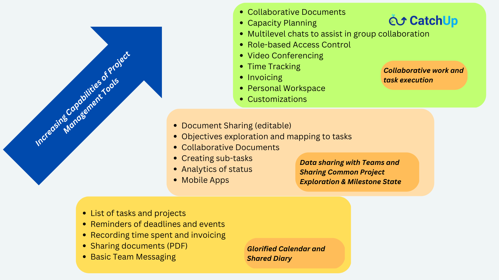

We can give you numerous reasons, but you can pick yours to switch to Catchup!
Because we understand the challenges of collaborating and working in hybrid & remote models!
So that you can focus on what matters, and the rest can be taken care of by CatchUp!
Because you're tired of integrating with a dozen other tools that our competition wants you to do!
Because you find it hard to harness the full potential of your remote teams while those creative minds struggle to collaborate and work together!
Because you wish to stop paying for expensive extras!
Because managing a project shouldn't be a project itself!
Because you're looking for a powerful yet inexpensive and easy-to-use project management and collaboration platform!
Because you're not just looking for a product, but a product with a cause!
Presenting... a Powerful yet Affordable, Next-Gen Environment to solve your organizational woes -
All in one place, at one great price - accessible from all your devices!
CatchUp allows you to organize tasks, assign them to your teams, and manage your work in minutes. It has all the features you need and many more under the hood that you can discover as you get more comfortable with it. No hurry, no worry!
So... Get, Set, Go!

Setting up
It's a breeze! Create a set of projects or replicate from templates for different but related aspects of your work. Add team members to this project, create the key tasks & action items and you're all set to go!
Task and Project Management
Collaborate with your team to complete the tasks and action items on-time and also document the results along the way using real-time chats and file sharing. Built-in efficient utilities (such as Kanban, Calendar, To Do lists, Notes, etc.) help you speed up your work and stay productive. You can also share files and collaboratively work on documents.
Optimize
You can add or modify or remove projects, tasks, action items and other shared work product easily and optimize your workflow as needed. You have rich views, supported by rich search features, to obtain the status at a glance and identify areas of further development!
On Any Device!
Yes, we know how teams work. You can use CatchUp on your desktop for the heavier tasks and do a lot on your smartphones or tablets on the go!
It is very secure and can be customized to your needs, including on-premises deployments for larger customers. Your data is secure and backed up!
Stop paying for expensive extras that add up!
If you are paying for additional video conferencing tools and software that cost an arm and leg per use, did we tell you that video conferencing and meetings are included in this one flat price? Learn more by trying us out.
You don't need "integrations" with dozen other tools like our competition wants you to do!
All our features are integrated within a single environment - meetings, videoconferencing, document sharing, task and project management, real-time chats. You don't need to stitch together Slack, Teams, OneDrive, Dropbox, and Zoom just to get something going! Life is complex already, work doesn't have to be!
Inexpensive to Try and Use
No, we don't use bait and switch. You can try it free and subscribe for your company at a fixed price each month. No surprises based on per user fee per month. Just a flat fee, for unlimited storage and use for you and your employees.
We can't wait for you to try us out and prosper! Let us know how we can make it better for you. We are not yet perfect, but you can be!
So, what are you waiting for?
Signup and harness the power of CatchUp to meet your goals.
Why whale?
Because there's a very powerful core that runs beneath this majestic yet playful platform that glides your projects to completion, gracefully.
And Yes! It's a Product with a Cause!
For all the good work done, a part of our revenues is donated to save the whales!